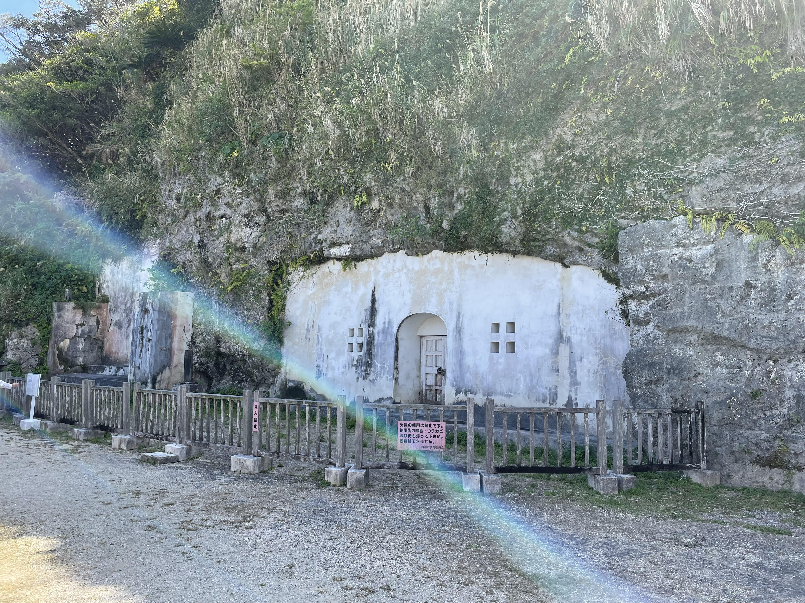
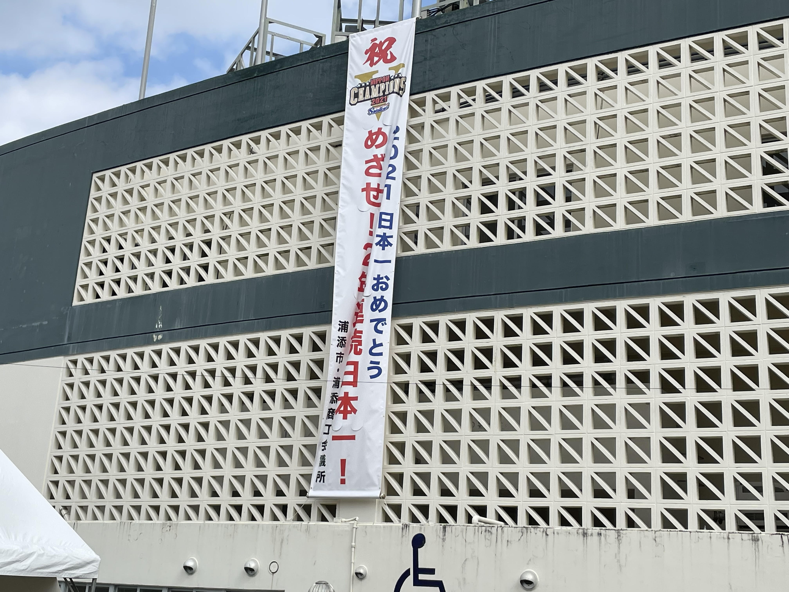

強優(ヒーロー)チームの
オリジナル動画はこちら‼
オリジナル動画はこちら‼
チームのメンバーが
浦添ダンス踊ってみた‼
浦添ダンス踊ってみた‼
チームのメンバーの
浦添おすすめスポット‼
浦添おすすめスポット‼
カップル向け 💖
浦添パルコシティ
買い物するところもご飯を 食べるところもあります。 目の前には海が広がています。 デートにはとてもおすすめです‼
買い物するところもご飯を 食べるところもあります。 目の前には海が広がています。 デートにはとてもおすすめです‼
オハコルテ
港川ステイツサイドタウンのなかにあって、 おしゃれなお店でタルトがとてもおいしいです‼ 他にもいろいろなお店があるので楽しめます‼
港川ステイツサイドタウンのなかにあって、 おしゃれなお店でタルトがとてもおいしいです‼ 他にもいろいろなお店があるので楽しめます‼
浦添大公園展望台
景色がよく、とても遠くまで見えます。 特に夜景がとても綺麗です‼ おすすめのデートスポット‼
景色がよく、とても遠くまで見えます。 特に夜景がとても綺麗です‼ おすすめのデートスポット‼
家族向け👪
カーミージー
沖縄らしい青い海です！ 干潮時には歩くことができ、 夕日がめっちゃ綺麗です！
沖縄らしい青い海です！ 干潮時には歩くことができ、 夕日がめっちゃ綺麗です！
とても長い滑り台があって、たくさんの遊具と すぐそばには広場もあり、一日中遊べます！

浦添ようどれ
琉球王国時代の王様が眠っているお墓です。 近くには、浦添グスク・ようどれ館があり、 浦添の歴史について学ぶことができます。
琉球王国時代の王様が眠っているお墓です。 近くには、浦添グスク・ようどれ館があり、 浦添の歴史について学ぶことができます。
グルメスポット
浦添市にはそば屋やカフェなどの 飲食店がたくさんあります!
浦添市にはそば屋やカフェなどの 飲食店がたくさんあります!
イベント！

プロ野球キャンプ
一年に一度二月に東京ヤクルトスワローズが ANA SPORTS PARK浦添にキャンプに来ます！ プロ野球ファンにはめちゃくちゃおすすめです‼
一年に一度二月に東京ヤクルトスワローズが ANA SPORTS PARK浦添にキャンプに来ます！ プロ野球ファンにはめちゃくちゃおすすめです‼
年に一度の二日間の浦添市の大きな祭りです！ 家族で行くのもよし‼友達と行くのもよし‼ 大好きな人と行くのもよし‼とても楽しいです
てだこウォークは浦添市内を歩くイベントです。 歩きながら浦添の色々なものを見ることができます。